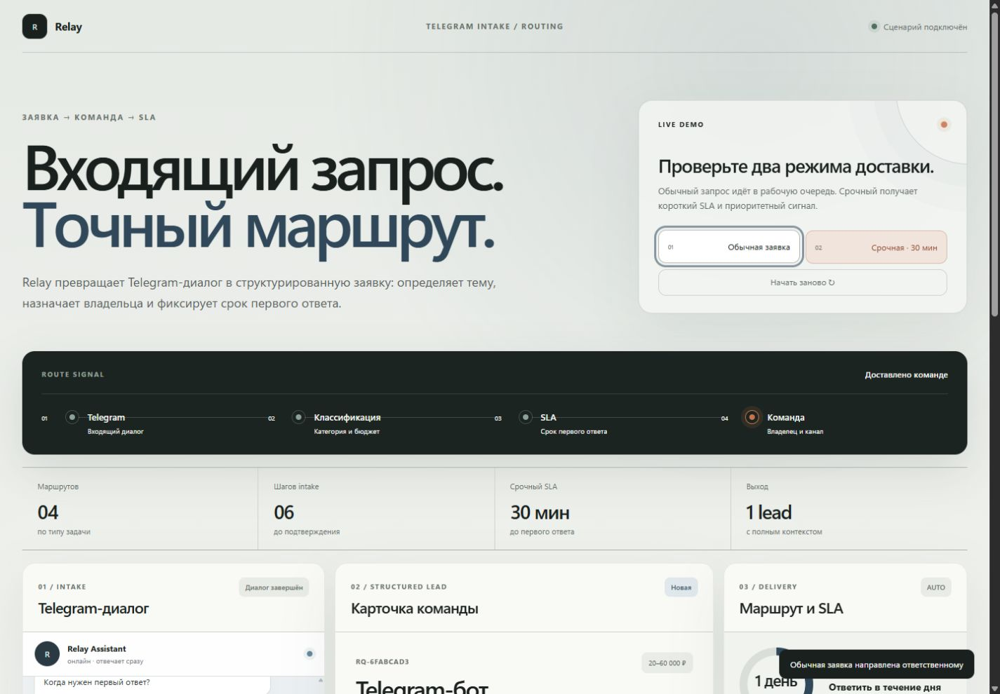
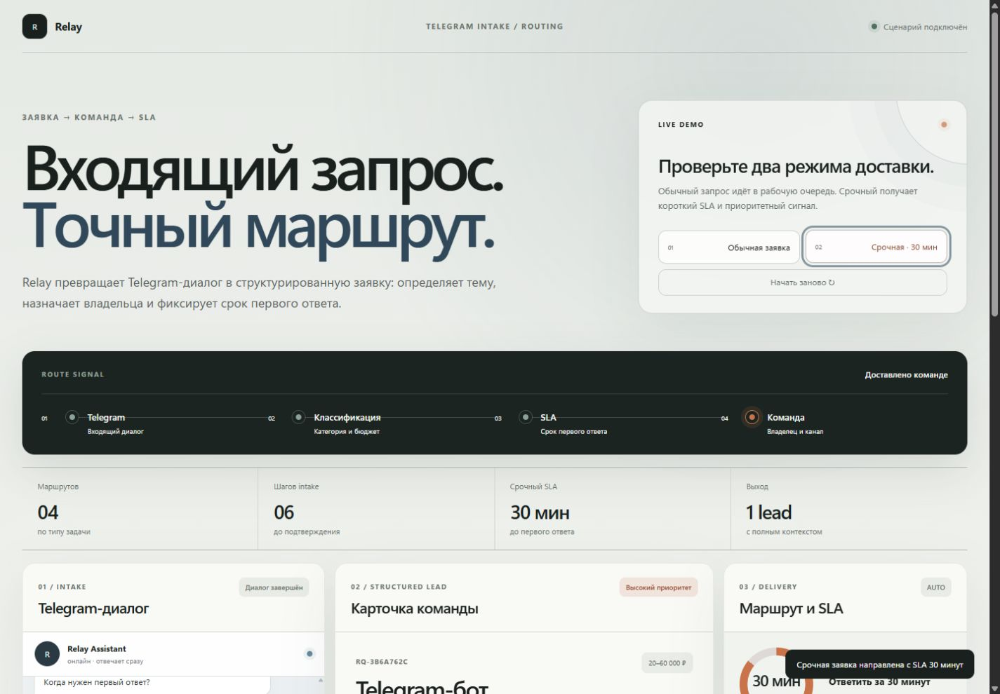
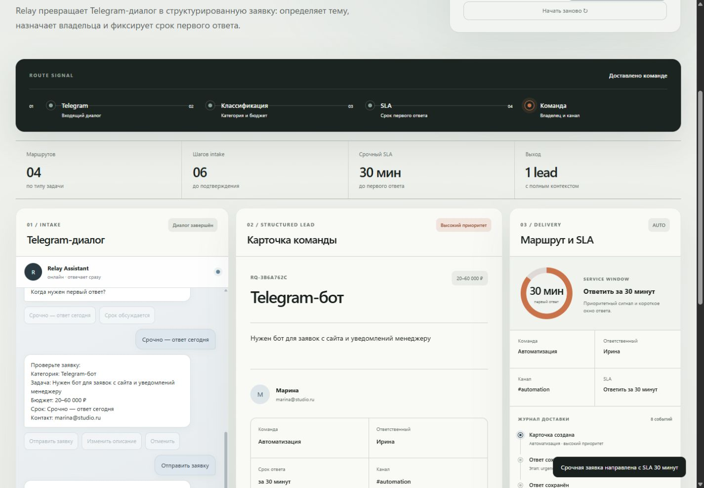
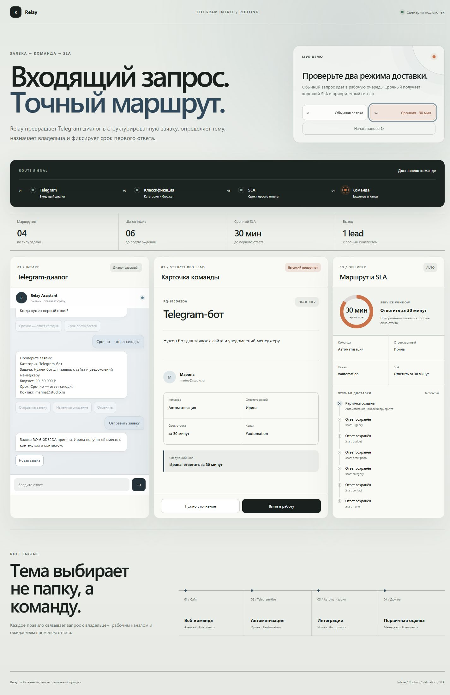

ОБЫЧНАЯ ЗАЯВКА
Работа по очереди.
Запрос получает стандартный приоритет, ответственного и SLA в течение рабочего дня.
- ПриоритетОбычный
- SLAВ течение дня

PRODUCT SYSTEM · CASE 04
TELEGRAM SIGNAL · ROUTING SYSTEM
Relay превращает свободный Telegram-диалог в управляемый сигнал: категория, приоритет, владелец и SLA — до того, как заявка попадёт в работу.

ONE INPUT
01 / ПРОБЛЕМА
Свободный запрос редко содержит бюджет, срок и понятного ответственного. Команда теряет время не на работу, а на восстановление контекста и ручную пересылку.
«Здравствуйте. Нужен бот. Сколько стоит?»обычное первое сообщение
02 / СЦЕНАРИЙ
Как обращаться
Телефон или email
Что требуется
Суть запроса
Диапазон
Обычно или срочно
Перед отправкой
ОБЫЧНАЯ ЗАЯВКА
Запрос получает стандартный приоритет, ответственного и SLA в течение рабочего дня.

СРОЧНАЯ ЗАЯВКА
Срочный запрос поднимается выше; демо назначает короткий SLA и формирует маршрут уведомления.
03 / ROUTE ENGINE
Relay связывает тип задачи с исполнителем, рабочим каналом и измеримым временем первого ответа.

04 / РЕЗУЛЬТАТ
Движок собирает задачу, контакт, бюджет, срок, владельца и следующий шаг в одной карточке. Журнал показывает, как она появилась.

05 / MOBILE
На телефоне сначала видны выбор сценария и сам диалог. Рабочая карточка и маршрут идут ниже — без горизонтального переполнения.
06 / ЧТО РЕАЛЬНО РАБОТАЕТ
Веб-симулятор честно показывает продуктовую механику. Подключение к реальному Telegram, базе и рабочим уведомлениям — отдельный интеграционный этап.